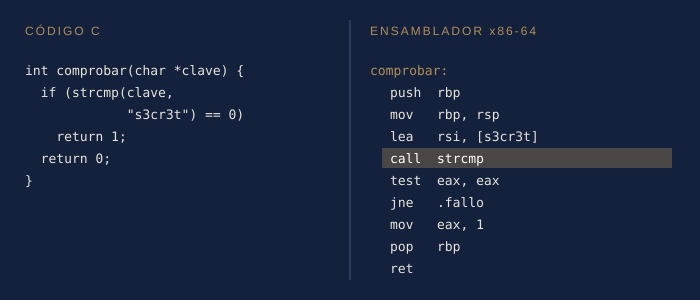
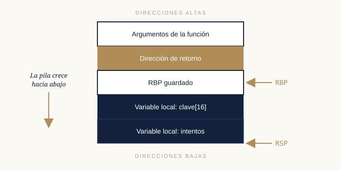
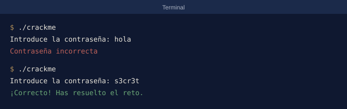

Aquí recojo los conceptos y técnicas que he ido aprendiendo, explicados de la forma más sencilla que he sabido.
Conceptos básicos de ensamblador
El ensamblador es la representación legible del código máquina. Cada línea es una instrucción muy simple que ejecuta el procesador. Comparar una función en C con su ensamblador es la mejor forma de aprender:

La misma función en C y en ensamblador. La llamada a strcmp está resaltada.
Estos son los registros e instrucciones que más me encuentro:
| Elemento | Tipo | Para qué sirve |
|---|---|---|
| RAX | Registro | Guarda el valor de retorno de las funciones. |
| RSP | Apunta a la cima de la pila. | |
| RIP | Apunta a la siguiente instrucción a ejecutar. | |
| mov | Instrucción | Copia un valor de un sitio a otro. |
| cmp / test | Compara dos valores. | |
| je / jne | Salta si la comparación es igual / distinta. | |
| call / ret | Llama a una función / vuelve de ella. |
La pila
La pila (stack) es una zona de memoria donde cada función guarda sus variables locales y la dirección a la que debe volver cuando termine. Entenderla es clave para seguir el flujo de un programa y, más adelante, para entender vulnerabilidades como el desbordamiento de búfer.

Estructura de la pila durante la llamada a una función.
Análisis estático
En el análisis estático el programa se estudia sin ejecutarlo. Es la forma más segura de empezar, sobre todo con archivos sospechosos.
- Buscar cadenas de texto interesantes (mensajes de error, URLs, contraseñas).
- Revisar las funciones que importa el binario.
- Localizar la función main y seguir el flujo del programa.
- Renombrar variables y funciones a medida que se van entendiendo.
Análisis dinámico
En el análisis dinámico el programa se ejecuta, normalmente dentro de una máquina virtual, y se observa con un depurador.
- Poner puntos de ruptura (breakpoints) en funciones interesantes.
- Avanzar por el código instrucción a instrucción.
- Observar cómo cambian los registros y la memoria.
- Modificar valores en tiempo real para cambiar el comportamiento del programa.
Consejo: combina ambos tipos de análisis. El estático te dice dónde mirar y el dinámico te confirma lo que ocurre realmente.
Resolviendo mi primer crackme
Estos son los pasos que seguí para superar una comprobación de contraseña sencilla:
Paso 1: Encontrar el mensaje
Al ejecutar strings apareció el texto "Contraseña incorrecta".
Paso 2: Encontrar la comparación
En Ghidra encontré la función que muestra ese texto y, justo antes, una llamada a strcmp.
Paso 3: Leer la contraseña
Con un breakpoint en strcmp en x64dbg pude leer la contraseña correcta directamente de la memoria.

El crackme resuelto con la contraseña encontrada.
Lección aprendida
¡Nunca guardes contraseñas en texto plano dentro de un programa!
Errores que cometí por el camino
- Empezar por el depurador antes de mirar las cadenas de texto.
- No renombrar las funciones, y perderme entre nombres como FUN_00401500.
Nota para mi yo del futuro
Antes de abrir nada, ejecuta strings y file. Son treinta segundos que ahorran horas.